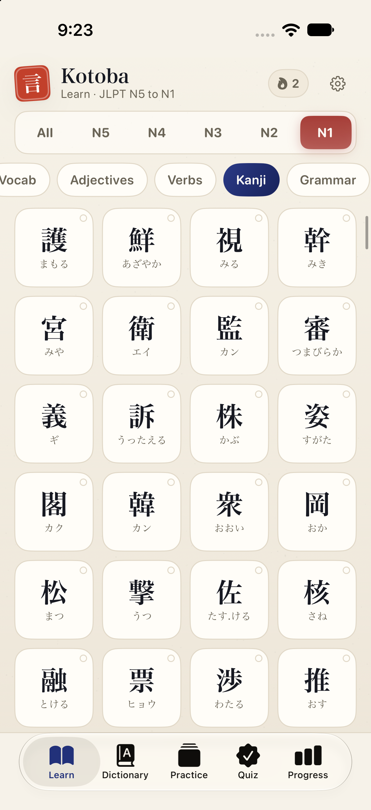
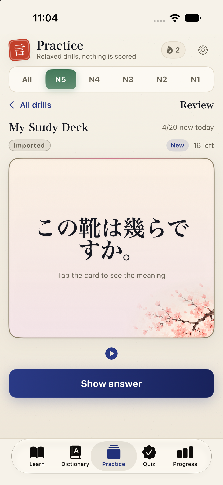
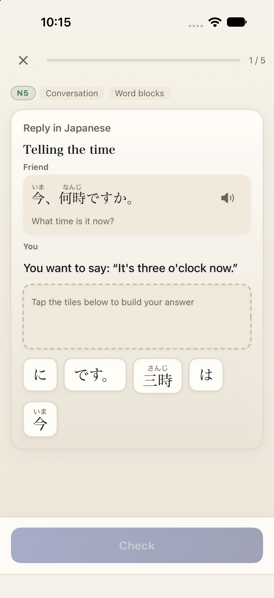
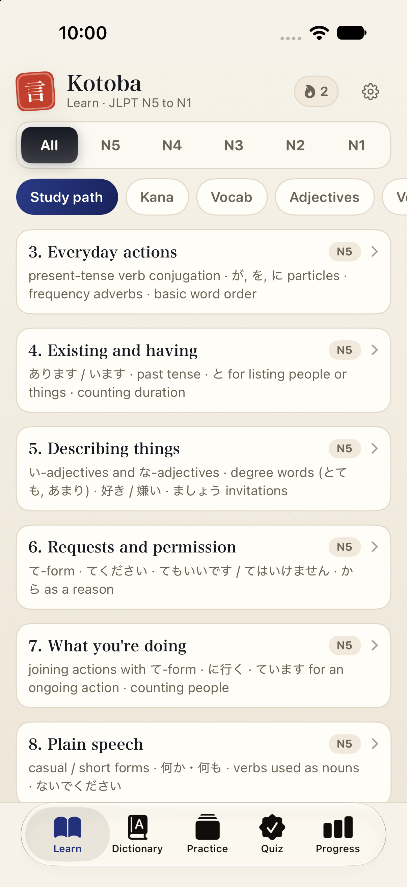

Kanji you can flip, not just read.
Every kanji is a card. Tap it to turn it over for the readings, the meaning, common compounds and an example sentence with furigana.
- On'yomi and kun'yomi side by side
- Compounds and sentences, translated
- Filter by JLPT level

Bring your Anki decks. Or build your own.
Import an Anki deck (.apkg) and study it in Kotoba Sensei next to everything else. The front, reading and meaning come across, and so does the sound when your deck has it.
Prefer to start fresh? Collect words, kanji and grammar points from the library into decks of your own.
- Imported cards join the same spaced-repetition reviews as the built-in lessons
- Sentence decks and single-word decks both work
- No limit on cards in an imported deck

Quizzes that make you produce the answer.
Pick the right particle, type your answer, or build the sentence from word blocks. Practice is by level, so you work on what the test will ask.
- Typed answers and word-block answers
- Grammar, particles and sentence order
- A dictionary with a JLPT filter for lookups

Know what to study next.
The study path lays out a suggested order through the app’s grammar and particles, in 23 short units. Tap a unit to see the matching grammar, particles and vocabulary already in the app.
- 23 units, from introducing yourself to causative-passive
- Each unit is tagged with its level, N5 up to N3
- Tap through to the related entries, all in one place

Prop it up. It quizzes you.
On the iPhone Duo, set it down half-open and Kotoba Sensei becomes a flashcard stand. A card shows for 15 seconds, flips to its meaning for 15 more, then moves on.
Pick the phone up and you are back in the app. The Duo's inner and outer screens each get a layout of their own.
Start with one card.
Free to download on iPhone.
Get it on the App Store